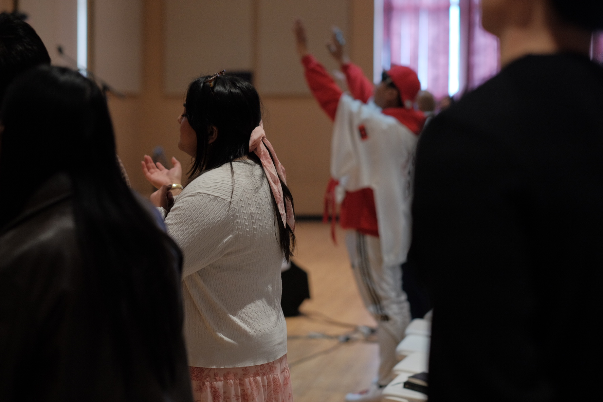

Sat7Nov
Men’s Breakfast Fellowship
Gather for breakfast and fellowship. See Bro. Edgar for more information.
From our weekly church bulletin, soonest first. Tap Add to calendar and it goes straight into your phone.
Gather for breakfast and fellowship. See Bro. Edgar for more information.

Union Gospel Mission and Millar College of the Bible invite you to a night of worship.

Come out for an afternoon of sports with the church community. See Bro. Isaac for further details.

An invitation to host
Would you like to open your home for a Bible study? Get in touch and we will help you get started.
Get in touchNothing new on the bulletin this week. Our Sunday service is at 1:30 PM every week, and you are always welcome.
A few things we look forward to every year, and one we are building toward.

Sunday, March 28, 2027 · 1:30 PMEaster SundayOn Good Friday we join the Filipino Interchurch Fellowship Winnipeg service.Easter details Late January and MayGrowth TrackFive classes on who we are, what we believe and where you fit. The way into membership at Faith Life.About Growth Track ComingFaith Life Bible InstituteWe are planning a Bible Institute at Faith Life. Register your interest and we will let you know as plans take shape.Register your interest
Late January and MayGrowth TrackFive classes on who we are, what we believe and where you fit. The way into membership at Faith Life.About Growth Track ComingFaith Life Bible InstituteWe are planning a Bible Institute at Faith Life. Register your interest and we will let you know as plans take shape.Register your interest Every event here is open to you, but Sunday is the easiest place to begin. Come as you are.